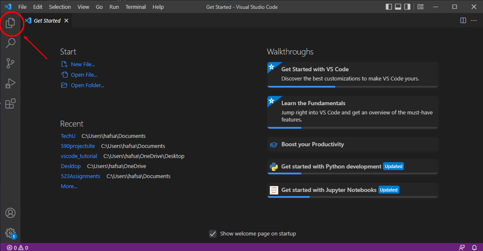
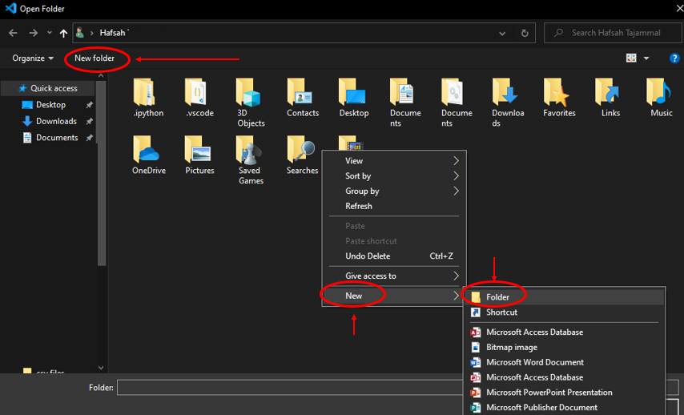
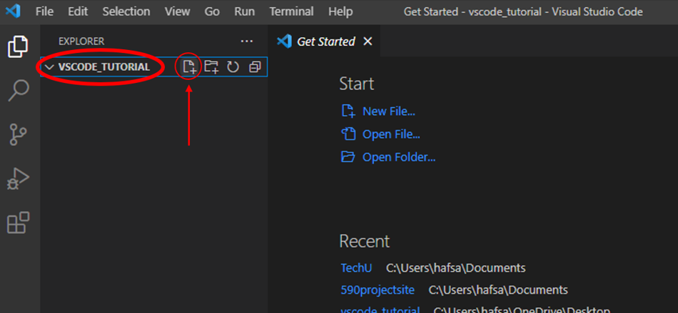

VS Code is one of the most flexible and popular integrated development environments (IDEs) you can write your code in. In this tutorial, you will learn how to download the app to your computer and open your first file to get started on your website. The included video will walk you through the necessary steps. If you'd prefer not to watch a video, we've included instructions and screenshots below that provide the same information. Click on the button that represents the type of computer you're using.
Good luck, and have fun!
Step 1
Click HERE to access the download page for VS Code.
Step 2
Click on the download button for Windows:
Step 3
Once the app downloads, open it from where you saved the app in your File Explorer. You should see this Get Started Page. Click on the Explorer icon to expand:

Step 4A
Click Open Folder, and your File Explorer will pop up:
Step 4B
You will see the option to open a folder. To create a NEW folder, click on “New Folder” OR right click in the open space by your other folders, hover over NEW, and click “New Folder”:

Step 4C
Name the folder “vscode_tutorial”, then click on it and then click “Select Folder”:
Step 5A
You should now see your folder on the left side of the application. Click on the New File icon to make a file and name it “index.html”:

Step 5B
The file will now be included within your vscode_tutorial folder. If you still want some more info/practice using VS Code, check out our VS Code Tips Tutorial! If you're comfortable with VS Code, proceed to the HTML tutorial to learn what this file is for and write your very first website content.